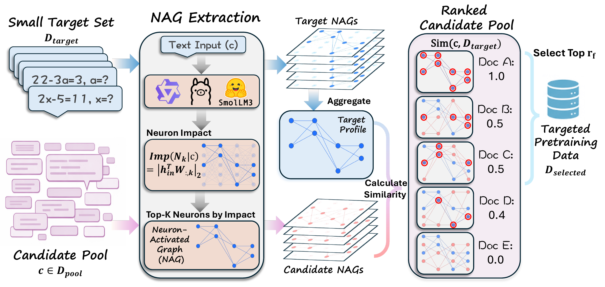
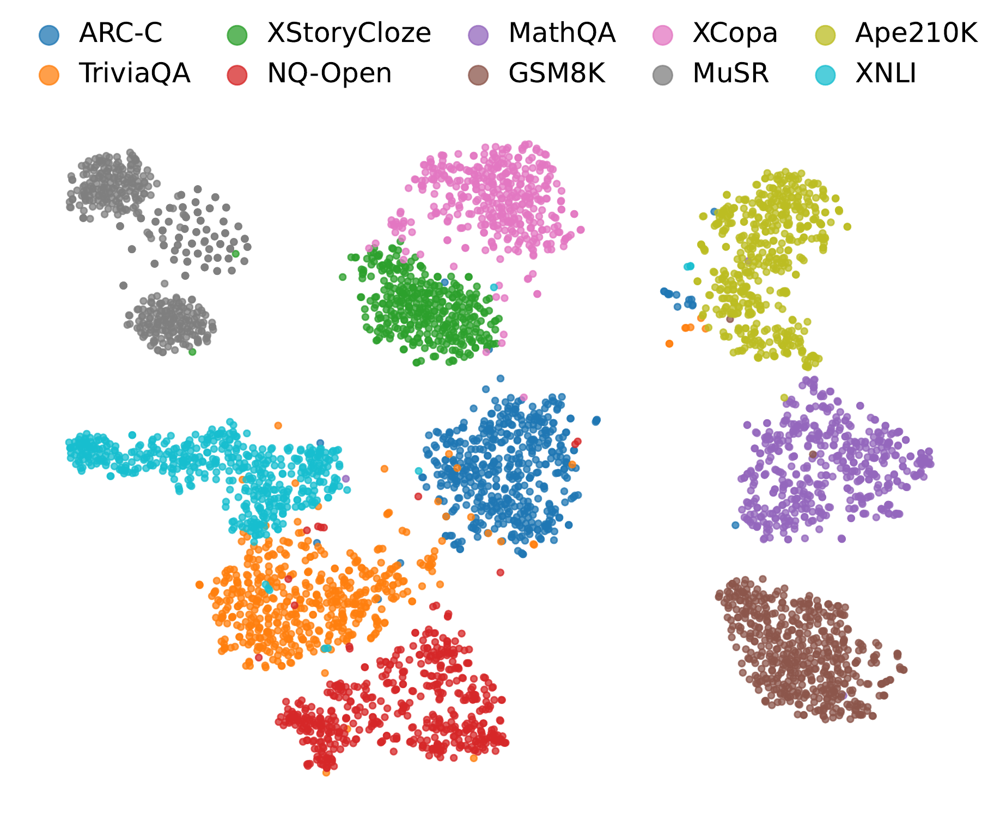
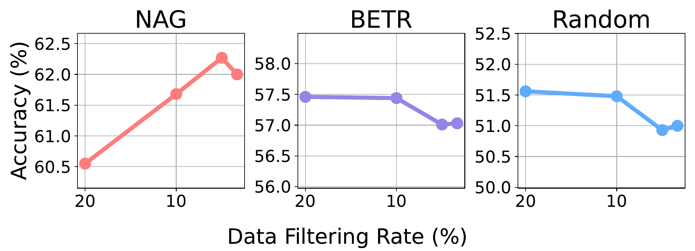
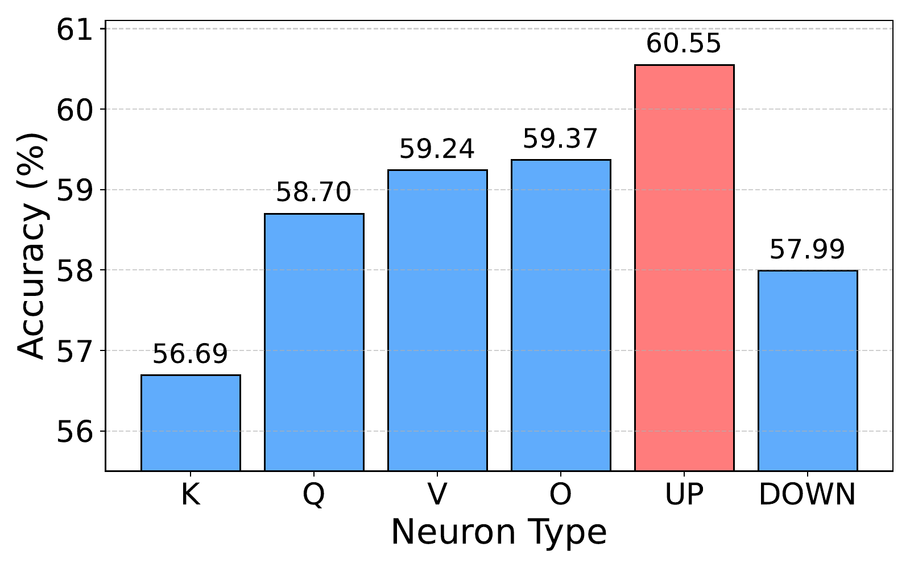
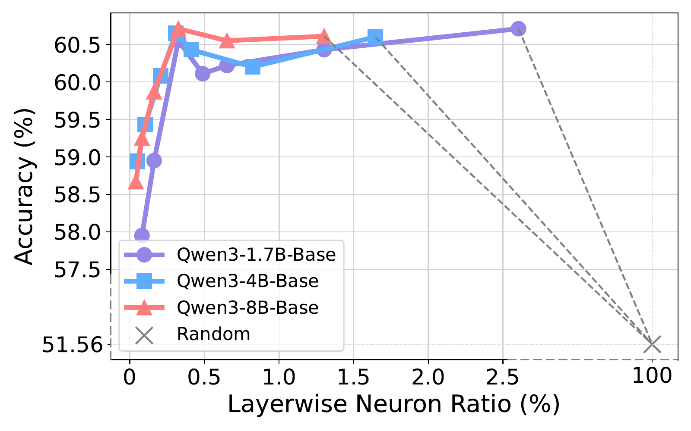

Everyday tasks come with a target, and pretraining models around this target is what turns them into experts. In this paper, we study target-oriented language model (LM) pretraining by introducing Neuron-Activated Graph Ranking (NAG-based Ranking), a training-free and interpretable framework for target pretraining data selection. Rather than using black-box representations, our approach directly characterizes each target input by a sparse set of high-impact neurons in any off-the-shelf LLMs.
Concretely, we quantify neuron impact and select the most influential neurons across layers into a compact Neuron-Activated Graph (NAG), and rank candidate data by NAG similarity to target examples. We conduct experiments across six benchmarks, where our NAG-based Ranking improves target-oriented pretraining by 4.9% on average over random sampling, and also outperforms state-of-the-art baselines by 5.3% accuracy on HellaSwag. It also remains effective under a more applicable multi-target setting, where our best setup surpasses two baselines by 1.1% and 4.1%, respectively.
Furthermore, we provide a comprehensive analysis on why and how our NAG works. For example, deactivating NAG-selected neurons (only 0.12% of all) causes a 23.5% performance collapse, and restricting NAG to the final layer incurs a 4.1% average drop, indicating that NAG captures a sparse "functional backbone" for learning target features.

Given a small set of target examples, we run them through a frozen off-the-shelf LLM, score the impact of every neuron, and keep the top-K per layer to form a compact NAG for each input. The target NAGs are aggregated into a per-layer neuron-activation profile. Every candidate document in the pretraining pool gets its own NAG and is ranked by its similarity to the target profile; the top-rf fraction is then selected for LLM pretraining.
Key Idea: Inputs that engage similar neurons in an LLM share similar task-relevant capabilities — so neuron co-activation is a direct, interpretable signal for picking pretraining data that matches a target.
| Method | ARC-C | HellaSwag | TriviaQA | MMLU | XStoryCloze | XWinograd | Avg. |
|---|---|---|---|---|---|---|---|
| Random | 28.5 | 51.6 | 15.6 | 30.2 | 67.1 | 76.5 | 44.9 |
| FineWeb-Edu | 34.3+5.8 | 55.3+3.7 | 20.1+4.5 | 32.8+2.6 | 65.9−1.2 | 76.2−0.3 | 47.4+2.5 |
| Single-Target | |||||||
| BETR | 32.3+3.8 | 57.5+5.9 | 20.2+4.6 | 31.1+0.9 | 71.0+3.9 | 80.7+4.2 | 48.8+3.9 |
| NAGQwen3-1.7B | 34.0+5.5 | 60.6+9.0 | 22.3+6.7 | 32.2+2.0 | 70.0+2.9 | 80.1+3.6 | 49.8+4.9 |
| NAGLlama-3.2-3B | 35.0+6.5 | 58.6+7.0 | 21.3+5.7 | 31.5+1.3 | 70.8+3.7 | 80.6+4.1 | 49.6+4.7 |
| NAGSmolLM3-3B | 35.0+6.5 | 59.8+8.2 | 22.6+7.0 | 31.2+1.0 | 70.5+3.4 | 80.6+4.1 | 49.9+5.0 |
| Multi-Target | |||||||
| BETR | 30.3+1.8 | 49.3−2.3 | 11.6−4.0 | 29.9−0.3 | 69.5+2.4 | 76.1−0.4 | 44.4−0.5 |
| NAGQwen3-1.7B | 33.4+4.9 | 57.8+6.2 | 19.2+3.6 | 31.5+1.3 | 69.3+2.2 | 79.9+3.4 | 48.5+3.6 |
| NAGLlama-3.2-3B | 32.0+3.5 | 54.9+3.3 | 18.0+2.4 | 31.4+1.2 | 69.8+2.7 | 79.9+3.4 | 47.6+2.7 |
| NAGSmolLM3-3B | 31.8+3.3 | 55.2+3.6 | 19.9+4.3 | 30.6+0.4 | 69.2+2.1 | 80.2+3.7 | 47.8+2.9 |
Bold = best overall, underline = second overall, shade = best within Single-/Multi-Target setting. Subscripts are deltas vs. Random (red for gains, blue for drops).
Observation 1: NAG-based Ranking yields a +4.9% average gain over Random and beats both quality-focused (FineWeb-Edu, +2.4%) and target-oriented (BETR, +1.0%) baselines, with +5.3% on HellaSwag.
Observation 2: The gain is robust across backbone models (+4.7% to +5.0%) and remains effective under the more challenging Multi-Target setting, where BETR drops -4.4% but NAG still gains +3.6%.
| Method | ARC-C | HellaSwag | TriviaQA | MMLU | XStoryCloze | XWinograd | Avg. |
|---|---|---|---|---|---|---|---|
| FineWeb-Edu | 34.3 | 55.3 | 20.1 | 32.8 | 65.9 | 76.2 | 47.4 |
| + NAGQwen3-1.7B | 35.3+1.0 | 57.7+2.4 | 21.7+1.6 | 32.5−0.3 | 67.2+1.3 | 79.2+3.0 | 48.9+1.5 |
| + NAGLlama-3.2-3B | 35.2+0.9 | 57.4+2.1 | 21.7+1.6 | 32.7−0.1 | 68.2+2.3 | 78.6+2.4 | 49.0+1.6 |
| + NAGSmolLM3-3B | 35.7+1.4 | 58.1+2.8 | 22.7+2.6 | 33.1+0.3 | 69.0+3.1 | 78.9+2.7 | 49.6+2.2 |
shade = best per column. Subscripts are deltas vs. FineWeb-Edu.
Observation 3: Adding NAG signals on top of FineWeb-Edu further boosts average accuracy by +1.8%, indicating NAG captures information complementary to general-quality scores.
| Method | ARC-C | HellaSwag | TriviaQA | MMLU | XStoryCloze | XWinograd | Avg. |
|---|---|---|---|---|---|---|---|
| Qwen3-1.7B-Base | 55.7 | 66.9 | 36.3 | 45.9 | 72.4 | 86.5 | 60.6 |
| Deactivate 20 neurons per layer (0.12%) | |||||||
| Deactivate Random | 55.5−0.2 | 66.8−0.1 | 35.8−0.5 | 45.8−0.1 | 72.4−0.0 | 85.9−0.6 | 60.4−0.2 |
| Deactivate NAG | 30.4−25.3 | 45.6−21.3 | 0.3−36.0 | 29.1−16.8 | 56.9−15.5 | 60.6−25.9 | 37.1−23.5 |
Subscripts are performance drops relative to the original Qwen3-1.7B-Base (blue for drops, gray for negligible).
Observation 4: Deactivating just 0.12% NAG-selected neurons triggers a 23.5% performance collapse, while deactivating the same number of random neurons has near-zero effect — NAG isolates a sparse functional backbone in the LLM.

t-SNE visualization of NAG-based representations across ten datasets. Clusters align tightly with task identity, and their relative positions reflect task relevance (e.g., MathQA and GSM8K cluster near each other yet far from XNLI).
Observation 5: NAG features form clean task-level clusters, evidencing that they encode task-discriminative structure rather than surface lexical similarity.

Performance under varying filtering rates rf. As rf decreases (only the highest-ranked data is kept), Random and BETR degrade, while NAG improves, peaking at rf = 5% with a +1.8% additional gain.
Observation 6: NAG's induced ranking is tightly aligned with downstream task utility — aggressive filtering of low-ranked samples actually improves accuracy.

up_proj neurons (60.6%) clearly beat residual-interface projections like
down_proj (58.0%) and k_proj (56.7%), suggesting expansion
layers in higher-dimensional latent space best isolate task-specific signals.
Observation 7: NAG works best when constructed from FFN
up_proj neurons — the high-dimensional expansion latent space exposes
task-discriminative activation patterns that compressed residual-stream projections
(down_proj, k_proj) wash out.
| Method | ARC-C | HellaSwag | TriviaQA | MMLU | XStoryCloze | XWinograd | Avg. |
|---|---|---|---|---|---|---|---|
| NAGAll Layer | 34.0 | 60.6 | 22.3 | 32.2 | 70.0 | 80.1 | 49.8 |
| NAGLast Layer | 30.5−3.5 | 55.2−5.4 | 15.1−7.2 | 29.9−2.3 | 67.8−2.2 | 75.5−4.6 | 45.7−4.1 |
Subscripts are deltas vs. NAGAll Layer (blue for drops).
Observation 8: Restricting NAG to the final layer incurs a -4.1% drop — task-relevant signals are distributed across all layers, not just the top.

Performance peaks at rk ≈ 0.3% across model scales (1.7B, 4B, 8B). Increasing sparsity 7× brings little extra gain, confirming the most competent task-relevant signals are concentrated in a very sparse set of high-impact neurons.
Observation 9: NAG concentrates into roughly 0.3% of neurons per layer, and larger LLMs yield more discriminative neurons under the same sparsity.
@article{wang2026nag,
title = {Target-Oriented Pretraining Data Selection via Neuron-Activated Graph},
author = {Wang, Zijun and Tu, Haoqin and Zhou, Weidong and Zhou, Yiyang and
Zhou, Xiaohuan and Zhang, Bingni and Feng, Weiguo and Wang, Taifeng and
Xie, Cihang and Liu, Fengze},
journal = {arXiv preprint},
year = {2026}
}